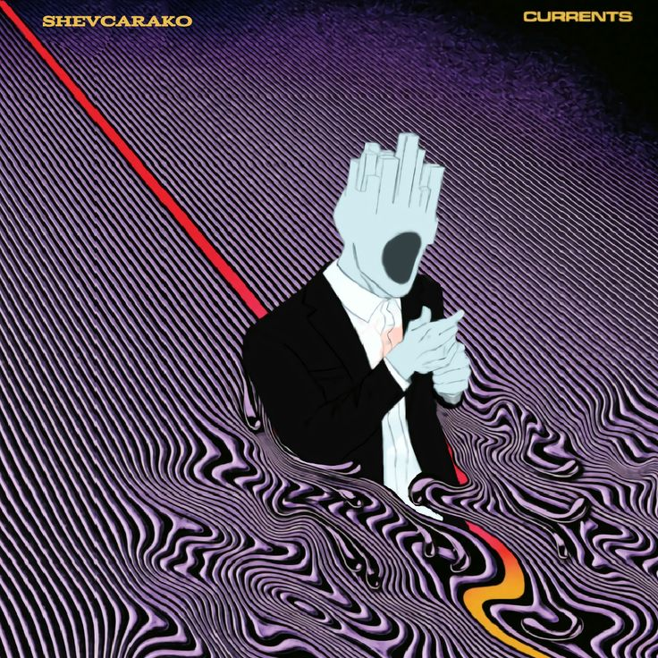

Olá! Eu criei esse site por ser muito fã de Hollow Knight, sendo quase fanático por esse jogo.
Eu o conheço desde o seu lançamento, bem no começo de 2017, mas eu só consegui de fato joga-lo em 2023, foi uma
experiencia incrível, amei cada segundo desse joguinho de inseto, sem dúvidas ele sempre vai estar em meu coração.
Mesmo conhecendo outros jogos, ULTRAKILL, por exemplo, mas de qualquer modo
espero que você goste desse jogo tanto quanto eu e divirta-se neste mundo!
Bem, sobre mim, me chamo Theodoro, fã de Hollow Knight e ULTRAKILL, estudo no primeiro informática e eu
espero que vocês gostem desta segunda apresentação do meu projeto, deu um certo trabalho para resolver algumas coisas
e adicionar outras, mas nada muito chato ou grave demais, originalmente o site era pra ser sobre ULTRAKILL, mas
não podiam ser jogos com sangue jorrando igual água, então escolhi o meu jogo favorito pra fazer o site.
